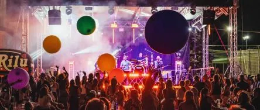

da sab 7 mar a sab 21 nov
MyPlay Coldplay Tribute Show live @ Birreria Anima, Rosà (VI)
MyPlay tornano alla Birreria Anima di Rosà: sabato 21 novembre una serata dedicata alla musica dei Coldplay
 Indicazioni
Indicazioni
- Costi e prenotazioni
- Costo non indicato · Prenotazione non indicata
- Programma
- Programma da verificare. Apri la fonte ufficiale per orari e possibili aggiornamenti.
- In caso di maltempo
- Nessuna indicazione specifica pubblicata.
- Note
- Acquisito automaticamente dalla fonte.
L’EVENTO
Descrizione completa
MyPlay tornano alla Birreria Anima di Rosà: sabato 21 novembre una serata dedicata alla musica dei Coldplay
Dopo il concerto dello scorso marzo e una stagione di esibizioni nei festival e nelle piazze del Nordest, la tribute band veneta torna nel Vicentino con il suo spettacolo immersivo tra musica dal vivo, luci, visual ed effetti scenici.
ROSÀ (VI) – Sabato 21 novembre 2026 la Birreria Anima di Rosà ospiterà nuovamente i MyPlay – Coldplay Tribute, formazione veneta che porta sul palco uno spettacolo dedicato alla musica e alle atmosfere della celebre band britannica. Il concerto avrà inizio alle ore 21:30.
Il ritorno nel locale vicentino arriva dopo l'esibizione dello scorso 7 marzo e una stagione che ha visto la band protagonista di numerosi appuntamenti tra Veneto ed Emilia-Romagna, alternando concerti nelle piazze, festival e manifestazioni.
Con l'arrivo della stagione autunnale, MyPlay riportano il loro progetto nei locali e nei live club, dove la vicinanza con il pubblico permette di valorizzare anche gli aspetti più intimi ed emozionali del repertorio dei Coldplay.
Uno spettacolo che unisce musica e tecnologia
Al centro del progetto MyPlay c'è la volontà di ricreare dal vivo le emozioni che hanno reso i Coldplay una delle band più amate a livello internazionale.
Il repertorio attraversa le diverse fasi della carriera del gruppo britannico, dalle atmosfere dei primi album fino ai grandi successi degli ultimi anni, con brani come Yellow, Clocks, Fix You, Viva La Vida, Paradise e A Sky Full of Stars.
La componente musicale è accompagnata da un'attenta produzione scenica che integra luci e contenuti video sincronizzati, effetti speciali e accessori luminosi distribuiti al pubblico, tra cui braccialetti LED e MoonGoggles.
Il risultato è uno show immersivo pensato per coinvolgere gli spettatori, trasformando i momenti più intensi del concerto in esperienze condivise.
Il ritorno alla Birreria Anima
Per MyPlay, il concerto del 21 novembre rappresenta anche un'occasione per ritrovare il pubblico del Vicentino in una location particolarmente legata alla musica dal vivo.
La Birreria Anima, in via Marsala 27 a Rosà, ospita regolarmente concerti e tribute band, offrendo al pubblico la possibilità di abbinare la serata musicale alla proposta gastronomica del locale.
L'appuntamento di sabato 21 novembre si inserisce nel calendario autunnale e invernale della band, che proseguirà con nuove esibizioni anche nei prossimi mesi.
MyPlay – Coldplay Tribute
Sabato 21 novembre 2026, ore 21:30
Birreria Anima – Via Marsala 27, Rosà (VI)
Informazioni e prenotazioni tavoli: 338 801 7511
Sito ufficiale: www.myplaycoldplaytribute.it
Facebook e Instagram: @myplaycoldplaytribute
IL PROGRAMMA
Programma e orari
Appuntamenti raccolti dalle fonti elencate. Dove manca un orario, non è ancora disponibile in questa scheda.
Programma pubblicato
- Dal 2026-03-07 al 2026-11-21
INFORMAZIONI UTILI
Prima di partire
- Controllare la fonte prima di partire.
ORGANIZZAZIONE